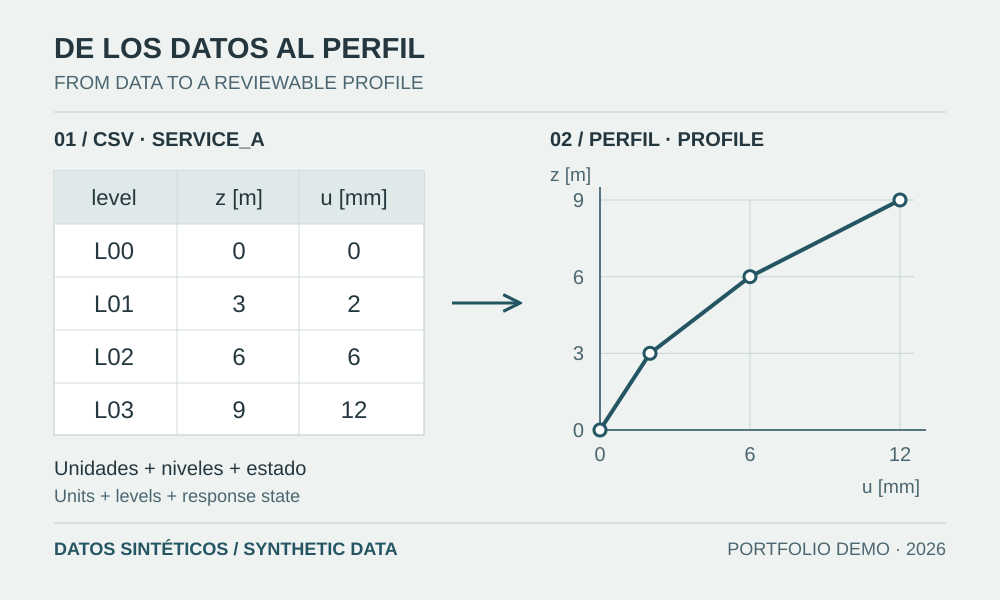

Un programa útil conserva el significado de los resultados. El demostrador por niveles muestra cómo validar unidades, comparar estados compatibles y documentar cada transformación antes de emitir conclusiones.

Procedencia de la figura
- Fuente
- Diagrama vectorial original del flujo de revisión del demostrador.
- Herramienta
- SVG
- Fecha
- 2026-10-08
- Descripción
- Tabla sintética SERVICE_A con cuatro niveles y su perfil de desplazamiento, conectados mediante controles de datos.
- Condición de uso
- Datos de demostración del portafolio 2026; no son resultados de ETABS ni de un proyecto profesional.
La pregunta estructural define el programa
Revisar un modelo no consiste en acumular tablas. Primero se define qué decisión requiere evidencia: identificar un cambio de rigidez, comparar desplazamientos de servicio o comprobar equilibrio. Después se seleccionan variables, estados y tolerancias. Python permite repetir operaciones y registrar excepciones; interpretar una diferencia sigue exigiendo conocer la estructura, la carga y la idealización.
El laboratorio acompaña este método con código ejecutable, datos sintéticos y pruebas que permiten revisar cada transformación, desde el CSV original hasta las tablas y los gráficos.
Establecer un contrato antes de leer el CSV
El módulo csv convierte filas en registros, pero no conoce unidades ni compatibilidad estructural [1]. El formato del demostrador exige case, level, elevation, displacement, elevation_unit y displacement_unit. Cada caso representa un estado de desplazamientos firmados y simultáneos sobre los mismos niveles.
En una exportación comercial se revisan previamente casos seleccionados, ejes, ubicación de lectura y significado del resultado [2–3]. Para usar datos reales, hay que adaptar esa exportación al formato documentado y conservar su procedencia. No existe aquí una conexión automática con ETABS o SAP2000.
| Dato | Control necesario | Error que evita |
|---|---|---|
| case + level | Identificador único; niveles equivalentes | Comparar plantas distintas |
| elevation / displacement | Número finito y unidad declarada | Leer NaN o confundir mm con m |
| Estado de respuesta | Mismo caso, dirección y estado compatible | Restar máximos no simultáneos |
Normalizar sin esconder errores
La entrada admite m, cm y mm; el proceso normaliza cotas y desplazamientos a metros. La presentación puede expresar desplazamientos en milímetros, conservando la unidad visible. Una unidad desconocida se rechaza. También se detectan campos ausentes, registros duplicados, valores no finitos y perfiles de niveles incompatibles. Corregir silenciosamente una celda vacía como cero modificaría el modelo que se pretende revisar.
Los nombres de caso y nivel siguen el contrato documentado, que excluye identificadores interpretables como fórmulas de hoja de cálculo. Debe mantenerse separado el archivo original del resultado procesado, con caso de referencia, unidades de salida y versión del código identificados.
Ejemplo verificable: dos perfiles de servicio
SERVICE_A contiene cotas 0, 3, 6 y 9 m y desplazamientos 0, 2, 6 y 12 mm. SERVICE_B mantiene las cotas y utiliza 0, 3, 8 y 15 mm. Las diferencias B − A son 0, 1, 2 y 3 mm. Para A, las derivas geométricas son 0,000667; 0,001333 y 0,002. El máximo de B es 7/3000 ≈ 0,002333.
Estos valores se calculan entre niveles consecutivos del mismo estado. No son derivas reglamentarias amplificadas ni se comparan automáticamente con un límite. Una envolvente modal o máximos independientes de una historia temporal requieren otro tratamiento y no son entradas válidas para esta resta.
from math import isclose
z_m = [0.0, 3.0, 6.0, 9.0]
u_mm = [0.0, 2.0, 6.0, 12.0]
drift = [(u_mm[i] - u_mm[i-1]) / (1000 * (z_m[i] - z_m[i-1]))
for i in range(1, len(z_m))]
assert isclose(max(drift), 0.002, rel_tol=1e-12)Probar resultados y rechazos
Una prueba independiente comprueba el máximo anterior; otras entradas deben provocar errores controlados. Conviene verificar que convertir todos los desplazamientos de mm a m conserva el resultado y que permutar filas no altera el perfil ordenado. Las comparaciones numéricas usan tolerancias explícitas y comprueban finitud [4]. unittest organiza estas comprobaciones [5].
El segundo demostrador ofrece una referencia diferente: un voladizo elástico con solución cerrada. Ayuda a distinguir validación de lectura, equilibrio, dependencia de parámetros y alcance mecánico; ninguna de estas comprobaciones demuestra por sí sola conformidad normativa.
Del resultado al informe técnico
La automatización aporta trazabilidad cuando un tercero puede reconstruir la operación y comprender sus límites. Un gráfico debe conducir a una pregunta estructural concreta y a una decisión documentada.
- Registrar qué archivos y casos se compararon, con unidades y supuestos.
- Separar datos rechazados, hallazgos geométricos y verificaciones normativas pendientes.
- Conservar exportaciones originales, resultados CSV/JSON y revisión del código.
- Revisar manualmente casos representativos y explicar las discrepancias.
Fuentes y referencias
- Python 3.12 — csv: lectura y escritura CSV, documentación oficial
Describe el formato y DictReader/DictWriter. El contrato de ingeniería del demostrador se documenta por separado.
- CSI — ETABS Choose Tables / Table Options, documentación oficial
Permite revisar la selección de casos y el formato de las tablas antes de exportarlas.
- CSI — ETABS Display Units, documentación oficial
Distingue configuración de unidades y presentación. El programa publicado importa un CSV normalizado; no usa la API de CSI.
- Python 3.12 — math.isfinite y math.isclose, documentación oficial
Funciones para rechazar valores no finitos y comparar resultados con tolerancias explícitas.
- Python 3.12 — unittest, documentación oficial
Marco de pruebas utilizado por los demostradores; una prueba de código no certifica un diseño estructural.